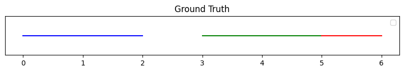
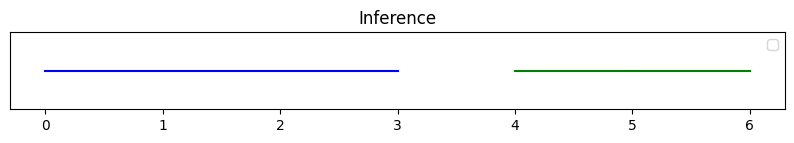

Understanding Diarization Error Rate (DER)
Speaker diarization is one of the most advance and
recent trending topics in speech processing, which gives the answer to the question
who spoke, when , basically enabling systems to partition an audio stream into segments
corresponding to different speakers. Evaluating the performance of such systems is essential for
ensuring their effectiveness in various applications, including speech transcription, speaker
recognition, and conversation analysis. Diarization Error Rate (DER) serves as a pivotal metric in
assessing the overall performance of speaker diarization systems.
What is Diarization Error Rate (DER)?
Diarization Error Rate quantifies the accuracy of a speaker diarization system by measuring the ratio of errors to the total duration of ground truth speech. It encapsulates three elementary errors:
- False Alarms (FA): Duration of non-speech segments misclassified as speech.
- Missed Detections (MD): Duration of speech segments misclassified as non-speech.
- Speaker Confusions (SC): Duration of speech segments misattributed to the wrong speaker (misclassified).
Understanding DER Calculation
DER is computed by summing the durations of false alarms, missed detections, and speaker confusions, and then dividing by the total ground truth speech duration. Mathematically, it is represented as:
Example DER Calculation
Let's consider an example:
- Ground Truth (Reference):
- Segment [0, 2]: Speaker A
- Segment [3, 5]: Speaker B
- Segment [5, 6]: Speaker C
- Inference (Hypothesis):
- Segment [0, 3]: Speaker A
- Segment [4, 5]: Speaker B
- Segment [5, 6]: Speaker B
For better visualization, graphs representing the ground truth and inference are provided in Fig. 1 and Fig. 2 respectively.
{kind=link}

{kind=link}

In the given example speaker diarization scenario, the Diarization Error Rate (DER) is calculated by identifying three types of errors: False Alarm, Missed Detection, and Speaker Confusion.
The False Alarm occurs between the segments [2, 3] seconds, where non-speech is mistakenly classified as speech. The Missed Detection happens in the segment [3, 4] seconds, where speech is erroneously classified as non-speech. Additionally, a Speaker Confusion error occurs in the segment [5, 6] seconds, where Speaker C is misidentified as Speaker B.
Using the formula, we calculate DER,
we calculate DER as 0.6 (Bit high 😂, it's important to note that the most optimal DER is 0, indicating a perfect match between the inferred and ground truth segments.)
*Remember, it's crucial to pay close attention and explore additional examples to gain a deeper understanding of the system's behavior (As they said, life is not that easy 🤠).
Now, let's verify our result using the widely
acclaimed speaker diarization library pyannote.audio and its Diarization Error Rate (DER)
metric.
Verification with Pyannote.audio: A Tool for DER Evaluation
Pyannote.audio is a powerful library for speaker diarization tasks, offering metrics like DER for evaluation. By comparing ground truth annotations with system inferences, it provides detailed insights into system performance.
# https://pyannote.github.io/pyannote-metrics/basics.html
%pip install pyannote.audiofrom pyannote.core import Segment, Annotation
ground_truth = Annotation()
ground_truth[Segment(0, 2)] = 'A'
ground_truth[Segment(3, 5)] = 'B'
ground_truth[Segment(5, 6)] = 'C'
inference = Annotation()
inference[Segment(0, 3)] = 'A'
inference[Segment(4, 5)] = 'B'
inference[Segment(5, 6)] = 'B'from pyannote.metrics.diarization import DiarizationErrorRate
metric = DiarizationErrorRate()
metric(ground_truth, inference, detailed=True){'confusion': 1.0,
'total': 5.0,
'false alarm': 1.0,
'missed detection': 1.0,
'correct': 3.0,
'diarization error rate': 0.6}Looks like we were right! ✌🏾
Limitations and Beyond DER
While the DER rate is super helpful, it doesn't cover everything. It doesn't tell us exactly which parts of a speaker diarization system might be causing problems. So, we should consider adding more metrics like Detection Error Rate and Segmentation Coverage to get a better picture of how well the system is doing.